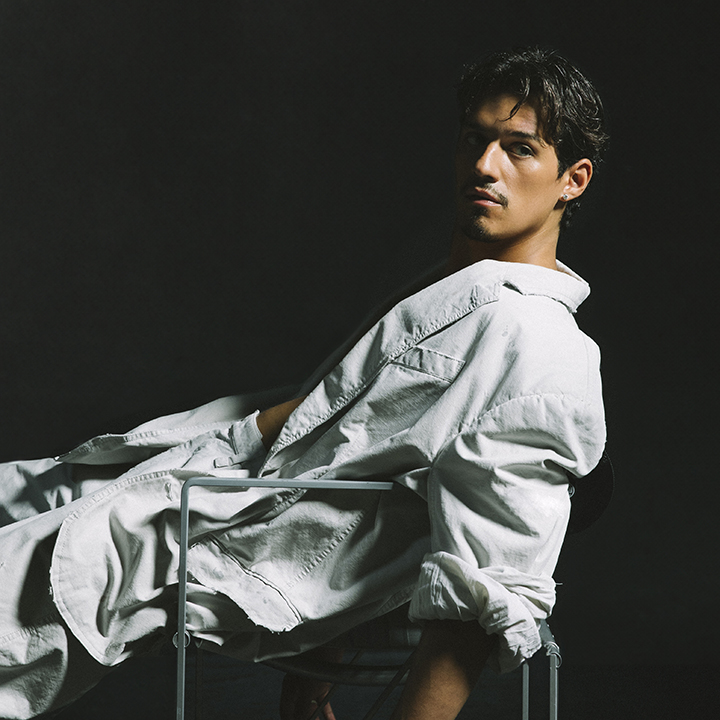

Omar Apollo
About the Artist:
Omar Apolonio Velasco, known professionally as Omar Apollo, is a Mexican American singer, songwriter, and actor who blends DIY pop with Mexican soul and traditional corridos. His music is known for its vulnerability and soulful, funky sound, often infused with psychedelic elements and lyrics about love.
Get the Latest tickets here!

David Anthony Burke AKA D4VD
About the artist
David Anthony Burke, known professionally as d4vd, is an American singer and songwriter. Burke began making music at his mother's recommendation to avoid receiving copyright strikes on his YouTube videos.
Get the Latest tickets here!

Billie Eilish
About the artist
Billie Eilish Pirate Baird O'Connell is an American singer, songwriter, and musician who first gained recognition in 2015 for her debut single, "Ocean Eyes". Eilish writes and records with her brother and producer, FINNEAS, from their parents' home. In 2020, she became the youngest artist to win all four major Grammy categories, also known as the "Big Four". She's only the second artist in Grammy history to achieve this feat.
Get the Latest tickets here!

Frank Ocean
About the artist
Frank Ocean is an American singer, songwriter, and rapper who some critics credit with pioneering the alternative R&B genre. In 2010, he joined Odd Future and released his first mixtape, Nostalgia, Ultra, in 2011. His 2012 debut album, Channel ORANGE, was nominated for six Grammys and showcased a range of styles, from Stevie Wonder-inspired soul to gospel and psychedelia. In 2016, he released his second album, Blonde.
Get the Latest tickets here!
Yiruma
About the artist
Yiruma is a South Korean pianist and composer known for his emotive and melodic compositions that blend classical and new age styles. He is a Christian and believes his music should help and change people, going beyond mere entertainment. Yiruma's music is distinct from Korean pop (K-Pop) and has gained international recognition, particularly for his signature piece "River Flows in You".
Get the Latest tickets here!
BackToTop